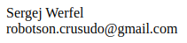

Stand 22.08.2023
Sehr geehrte Nutzerin, sehr geehrter Nutzer,
wir nehmen den Schutz Ihrer Daten sehr ernst und möchten Ihnen in dieser Datenschutzerklärung erläutern, wie wir Ihre personenbezogenen Daten im Zusammenhang mit unserer Android-App Beetplaner (im Folgenden App) verarbeiten. Unsere App ermöglicht es Ihnen, einen Plan der Beete in einem Garten zu erstellen.
Verantwortlicher im Sinne der Datenschutz-Grundverordnung (DSGVO) ist:

Unsere App verarbeitet ausschließlich die folgenden Daten:
Die von uns erhobenen Daten dienen ausschließlich dazu, unsere App zu verbessern und die Nutzererfahrung zu optimieren. Die Geräteinformationen, Absturzberichte und Nutzungsdaten werden ausschließlich für interne Zwecke verwendet und nicht an Dritte weitergegeben. Die größe der Gärten wird dazu verwendet, die Einschränkungen der App hinsichtlich ihrer Nutzung anzupassen. Die Wahl der Aussaht hilft uns zu erkennen, welche Aussahten ggf. in der App noch fehlen oder von vielen Nutzern gerne gewählt werden
Die Verarbeitung der Geräteinformationen und Nutzungsdaten erfolgt aufgrund unseres berechtigten Interesses an der Verbesserung unserer App und der Optimierung der Nutzererfahrung.
Die Geräteinformationen und Nutzungsdaten werden für einen Zeitraum von einem Jahr gespeichert und danach gelöscht.
Sie haben das Recht, von uns Auskunft darüber zu verlangen, welche personenbezogenen Daten wir von Ihnen verarbeiten. Sie haben auch das Recht, die Berichtigung, Löschung oder Einschränkung der Verarbeitung Ihrer Daten zu verlangen.
Die App fordert folgende Berechtigungen an und nutzt sie für die nachfolgend dargestellten Zwecke:
Internetzugriff: Die App verwendet den Internetzugriff, um die in Abschnitt 2 beschriebenen Geräte- und Nutzungsdaten zu übertragen.
Wenn Sie Fragen oder Bedenken bezüglich der Verarbeitung Ihrer Daten haben, können Sie uns unter den oben genannten Kontaktdaten erreichen.